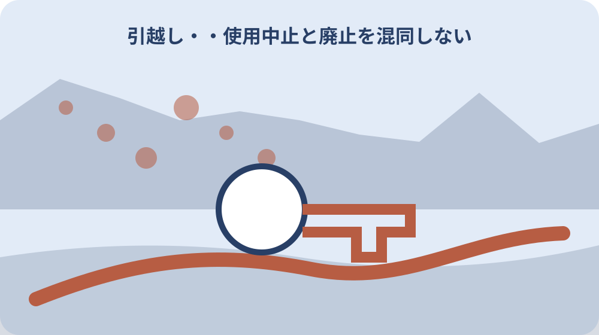

先に結論を確認する
この記事の答え：できません。森町は所定の給水届提出を必要とし、電話や問い合わせフォームでは受け付けないと案内しています。
森町で最初に照合する条件：退去日、鍵の引渡日、閉栓希望日を別々に記録して前営業日の期限から逆算する。
退去日と閉栓希望日を分ける
賃貸住宅の退去日、鍵を返す日、水道を止めたい日は同じとは限りません。最終清掃を退去後に行うなら、その時間に水が必要かを管理会社や作業者へ確認し、閉栓希望日を別に決めます。
森町の給水届は希望日の前日までですが、土日祝日と年末年始は期限計算から除かれます。月曜日に止めたい場合などは直前の平日を待たず、上下水道課へ余裕を持って提出方法を確認します。
引越し台帳には退去日、鍵の引渡日、閉栓希望日、給水届提出日を四列で残します。日付が同じでも欄をまとめなければ、誰がどの作業を済ませたか後から確かめられます。
閉栓を依頼した後は、受付の有無と実際に使用停止となった日を確認します。退去したという事実だけで基本料金が止まったと考えず、最終請求の対象期間まで見届けます。
作業日の朝には、誰が室内で水を使うかをもう一度確認します。予定外の清掃が残った場合も、町の処理を無断で変更せず、管理会社と上下水道課へ連絡して記録を更新します。
森町では電話やホームページ問い合わせフォームによる水道の開栓・閉栓受付を行っていない。この案内を起点に、今回の住所と希望日を伝えて適用範囲を確認します。家族の過去の経験だけで受付方法を決めません。
退去日、鍵の引渡日、閉栓希望日を別々に記録して前営業日の期限から逆算する。予定変更が起きたら、変更前の行を消さず新しい日付を追加します。誰が町へ連絡するか決め、同じ内容を重ねて依頼しないようにします。
引越し当日に閉栓時刻を変更したくなっても、現場判断だけで水道設備を操作しません。まず管理会社と上下水道課へ連絡し、町が受け付けた希望日と実際の作業予定が一致するかを確かめます。
給水届が必要な四つの変更を確認する
森町では使用開始、使用中止、使用者や所有者の変更、名字や送付先の変更が届出対象です。引越しで該当する項目を一つずつ選び、複数ある場合は同時に扱えるか窓口へ尋ねます。
入居者が変わらなくても、結婚などによる名字の変更や納付書の送り先変更が生じます。水を止めない案件でも届出が必要になり得るため、開栓と閉栓だけの表にしないことが大切です。
所有者と実際の使用者が異なる物件では、どちらの名義を変更するのかを明示します。賃貸借契約書の呼び方だけで判断せず、町の水道登録上の現在名義を確認してから記入します。
提出前に、変更前の氏名・住所、変更後の氏名・住所、変更日、連絡先を読み合わせます。郵便物の宛先だけを直したい場合も、その範囲を窓口へ伝えて必要な届出を選びます。
一つの引越しで使用中止と送付先変更が重なることがあります。用紙のどの欄へ記載するかを事前に確認し、変更の効力が生じる日を項目ごとに残します。
森町で水道を新たに使用するときは所定用紙の給水届を提出する必要がある。台帳へ転記するときは制度の説明と自分の予定を別欄にします。町の記載を短く言い換えて条件を落とさないようにします。
一時的な休止と権利を放棄する廃止を同じ処理として依頼しない。書類の原本を家族間で回す場合は保管者を一人決めます。写真や写しには版と撮影日を付け、古い用紙への記入を防ぎます。
変更項目が複数あるときは、家族用のチェック表で一件ずつ消し込みます。使用中止が済んでも送付先変更が残ることがあるため、新しい宛先へ最終請求が届くところまで追跡します。
電話受付不可を家族へ共有する
森町は開栓・閉栓を電話やホームページの問い合わせフォームでは受け付けていません。家族が電話で事情を説明しても、それだけで給水届の提出が終わったとは扱わないよう共有します。
台帳の状態は「問い合わせ」「用紙準備」「提出」「受付確認」に分けます。電話した日を提出日へ転記しない仕組みにすると、遠方の家族が代わりに連絡した場合も未完了の工程が見えます。
提出方法や窓口時間は実行前に上下水道課へ確認します。郵送等を検討する場合は、到着日が期限に間に合うか、原本が必要か、控えをどう残すかまで質問します。
家族や不動産会社へ依頼した場合は、依頼した日ではなく町へ届いた日を確認します。担当者名、提出した給水届の対象住所、希望日を控え、別物件の手続と混ざらないようにします。
高齢の家族が電話だけで済んだと思っている場合は、責めずに受付方法を一緒に確認します。提出を代行する人は控えを本人へ戻し、現在の進捗を短い言葉で共有します。
転居や転出により水道使用をやめる場合も上下水道課への給水届提出が必要である。この事実は提出前の確認項目として扱います。受付後の処理日や料金への反映は、対象住所ごとの回答を記録します。
地区別の検針月を確認し、最終請求の対象期間を自己判断しない。窓口へは一度に多くを尋ねず、住所、名義、希望日を先に伝えます。回答がどの質問に対応したか通話後すぐに整理します。

前営業日の期限から逆算する
希望日の前日という期限は、土日祝日と年末年始を除いて考えます。連休明けの開栓や閉栓は準備期間が短くなるため、カレンダーへ希望日と町の開庁日を重ねて最終提出日を決めます。
用紙を入手した日、家族が署名等を確認する日、町へ提出する日を分けて予定します。最後の一日にすべてを集めず、不明欄を窓口へ照会する時間も逆算に含めます。
引越し業者、管理会社、清掃業者の予定が変わったら、閉栓希望日も見直します。町へ変更を伝える方法と締切を確認し、古い希望日を線で残して変更理由を記録します。
期限に間に合わない可能性が出た時点で上下水道課へ相談します。家族だけで翌営業日扱いになると決めず、具体的な住所、希望日、提出予定を伝えて案内を受けます。
年度末や大型連休の引越しは窓口の混雑も想定します。締切日に間に合うだけでなく、不備を直せる日を残した提出予定にすると、希望日の変更を避けやすくなります。
水道の使用者または所有者を変更するときは森町上下水道課への届出対象となる。公式ページを保存した日と、案内そのものの更新日を分けます。引越し日までに変更がないか、提出直前にも開き直します。
退去日、鍵の引渡日、閉栓希望日を別々に記録して前営業日の期限から逆算する。受付時間外に気づいた不足は翌開庁日の連絡事項へ置きます。緊急でない水道手続と、漏水など直ちに連絡すべき異常を分けます。
使用中止と廃止を混同しない
使用中止は水道をいったん止める考え方で、廃止は将来の権利や再使用条件に関わります。長期間使わないという理由だけで廃止を選ばず、再び使う可能性を家族と確認します。
森町は廃止後に再使用すると新規扱いとなり、加入金が発生すると案内しています。目先の基本料金だけでなく、再開時の費用と手続を含めて中止との違いを比較します。
廃止では供給停止方法を図で確認するため、上下水道課窓口での事前相談が必要です。方法によって印鑑の持参案内もあるため、持参物を聞いてから出向きます。
台帳には「中止」か「廃止」かを正式な回答どおりに記し、相談日と判断者を添えます。不動産の売却予定が変わった場合も、以前の判断をそのまま使わず再確認します。
用語が分からないときは、自分の希望を「いつまで使わない予定か」「将来また使う可能性があるか」で説明します。制度名を推測するより、町から適切な区分を案内してもらいます。
名字変更などによる郵便物の宛名や送付先住所の変更も水道届出の対象に含まれる。町の説明で分からない用語はそのまま質問表へ写します。家族が意味を推測して別の手続名へ置き換えないようにします。
一時的な休止と権利を放棄する廃止を同じ処理として依頼しない。中止か廃止か迷う理由も記録します。使用再開の可能性、予定期間、費用の不明点を示せば、窓口から具体的な案内を受けやすくなります。
廃止後の加入金を比較する
廃止を検討するときは、使用を止めている期間の基本料金と、将来新規で再使用する場合の加入金を別々に確認します。金額の確認日と水道口径など前提条件も残します。
空き家を数年後に売る、親族が戻る、改修で水を使うといった予定は確定していなくても書き出します。再利用の可能性が少しでもあるなら、廃止の影響を上下水道課へ具体的に尋ねます。
費用比較は加入金だけで終わりません。再開工事や敷地内設備の状態など別の負担が生じ得るため、町が回答できる範囲と指定工事店等へ確認する範囲を分けます。
家族会議では比較に用いた金額、確認先、確認日、想定期間を一枚にします。将来条件が変わったときに、古い金額だけが独り歩きしないよう資料の版を付けます。
比較結果は家の売却価格や賃料へ直結すると断定しません。水道の扱いは物件説明の一項目として事実を残し、将来の利用者にも確認日と回答元を伝えます。
開栓・閉栓の届出期限は土日祝日と年末年始を除く希望日の前日までである。費用に関する記載は金額だけを抜き出しません。発生条件、対象となる口径や契約、確認日を一緒に残して比較します。
地区別の検針月を確認し、最終請求の対象期間を自己判断しない。比較表には確認できなかった項目を空欄で残さず「未確認」と書きます。次の確認先と期限が決まるまで結論欄を閉じません。
最終検針月を地区別に確かめる
森町の上水道と公営簡易水道は二か月に一度検針され、地区によって奇数月と偶数月に分かれます。対象住所がどの区分かを確認し、最終請求の時期を見通します。
大鳥居・森・一宮地区と公営簡易水道は奇数月、飯田・園田地区は偶数月という案内です。住所の呼び方だけで区分を推測せず、境界付近や不明な場合は窓口へ確認します。
閉栓日と検針月が離れているときは、使用期間と請求時期を混同しやすくなります。最終メーター確認日、請求書の対象期間、支払期限を別欄に置きます。
退去後に届く請求を見落とさないよう、郵便物の送付先と口座振替の状態も確認します。請求が届かないことを精算完了の証拠にせず、町へ最終分の扱いを尋ねます。
メーターの指示数を撮影する場合は、敷地へ入る権限と安全を確認します。写真は町の検針の代用ではなく、引渡し時点の参考記録として日時を付けます。
水道使用中止の届出がない場合は使用水量がゼロでも基本料金が発生する。検針の案内は最終請求を探す手掛かりです。閉栓の受付とは別工程として、請求対象期間と支払完了を確認します。
退去日、鍵の引渡日、閉栓希望日を別々に記録して前営業日の期限から逆算する。地区名と検針月の対応は町資料で確認します。住所表記が資料の区分と合わない場合は、自分で境界を判断せず問い合わせます。
基本料金が止まる条件を確認する
森町は使用中止の届出がなければ、使用水量がゼロでも基本料金が発生すると案内しています。空き家で蛇口を使っていないことと、契約上の使用中止は同じではありません。
メーターが動いていない写真や検針票だけでは届出の代わりになりません。給水届の提出日、希望した中止日、町の受付確認をそろえて台帳へ残します。
中止後に設備点検や清掃で再び水を使う場合は、勝手に開栓せず必要な給水届を確認します。短期間だから不要と判断せず、使い始める日から期限を逆算します。
基本料金がいつまで請求され、最終分をどう支払うかは対象住所ごとに確認します。口座振替を止める時期も、水道料金の精算完了を見てから金融機関等の手続へ進みます。
空き家管理で定期的に水を使う計画があるなら、中止が適切かを再検討します。凍結、臭気、設備保全など管理目的の通水は専門業者の助言も受けて決めます。
水道を廃止すると再び使う際は新規扱いとなり加入金が発生すると森町が案内している。使用量がないことと料金が止まることを分ける根拠になります。届出控えが見当たらない場合は町へ受付状況を照会します。
一時的な休止と権利を放棄する廃止を同じ処理として依頼しない。空き家の管理方法は季節や設備で変わります。料金手続の記録とは別に、漏水防止や通水管理を専門業者へ相談した履歴を残します。
不動産会社へ委託した届出を照合する
売買や賃貸の引渡しで不動産会社が水道手続を補助する場合も、誰が給水届を提出するかを契約時に明確にします。「手配します」という言葉だけで提出者を決めないことが重要です。
委託するなら、対象住所、開始または中止の希望日、名義、連絡先を依頼書へ残します。会社から町へ提出した日と受付結果を受け取り、家族の台帳へ反映します。
買主や新しい入居者の開始届と、旧使用者の中止届は別の立場から行う手続です。相手が開始するから自分の中止も自動で終わると考えず、それぞれ確認します。
引渡し後に未提出が分かった場合の連絡担当も決めます。町、不動産会社、当事者のどこに確認したかを時系列で残せば、責任の押し付け合いより先に未完了作業を特定できます。
委託先から受け取る報告には「連絡済み」ではなく提出日と対象手続を書いてもらいます。取引関係者が複数いるときほど、町の受付事実を一つの台帳へ集約します。
水道廃止は供給停止方法を図で確認するため上下水道課窓口での事前相談が必要である。委託先へ伝える際も町の案内文を共有します。依頼内容が途中で要約され、希望日や名義が変わっていないか控えを照合します。
地区別の検針月を確認し、最終請求の対象期間を自己判断しない。不動産取引の関係者へは必要な範囲だけを共有します。新旧使用者の個人情報を一枚に混載せず、町へ提出する情報を確認します。
開始日の鍵受領と通水を確認する
入居側は鍵を受け取る日と水を使い始めたい日を分けます。清掃や設備点検を先に行うなら、実際の入居日より前に開始が必要かを管理会社と確認します。
給水届を提出した後も、開栓希望日に蛇口から水が出ることだけで設備全体の安全を保証できません。長く空いていた住宅では漏水や器具の状態を確認し、異常があれば止水して連絡します。
通水確認はメーター、屋内外の蛇口、トイレ、給湯設備など場所を決めて行います。確認時刻と立会者を記し、勝手に修理せず所有者や指定工事店へ相談します。
鍵の受領が遅れた場合は、開始希望日を変更する必要があるか町へ連絡します。使用していない期間も登録上の開始日から料金へ影響し得るため、予定変更を放置しません。
集合住宅や共用設備がある建物では、専用部分だけで判断しないよう管理者へ確認します。水道メーターや止水栓を取り違えないため、位置が不明なら触らず案内を求めます。
森町公式は水道廃止の方法によって印鑑の持参を案内する場合がある。開始側では水が出る時刻だけを約束せず、届出期限と建物へ入れる時刻を組み合わせます。設備確認の責任者も決めます。
退去日、鍵の引渡日、閉栓希望日を別々に記録して前営業日の期限から逆算する。通水時に異常を見つけたら、場所と時刻を記録して止水します。修理の可否をその場で決めず、所有者や管理者へ状況を戻します。
大石の視点：廃止は料金だけで決めない
ここまでの届出対象、期限、電話受付不可、基本料金、廃止後の加入金、検針区分は森町公式資料に基づく事実です。以下は不動産の引渡しを扱う私、大石博之の実務上の考えです。
私は廃止を、空き家期間の料金だけで決めない方がよいと考えます。売却、賃貸、建替え、親族利用の可能性を並べ、再使用まで含めた費用と手間を確認してから選びます。
また、水道の受付完了と建物設備の健全性は別です。長期間使わなかった住宅では、通水時に漏水や給湯設備を確認する担当を決め、異常時の連絡先を準備します。
私見は森町の公式判断ではありません。中止と廃止の選択、加入金、個別設備の扱いは、住所と現在の登録状況を示して上下水道課や必要な専門業者へ確認してください。
家族の結論が出ない場合は、確認した事実と未決定事項を分けて町へ相談します。期限のある届出を放置せず、後で変更できる範囲も尋ねたうえで現実的な選択をします。
森町の上水道と公営簡易水道は検針と料金納入を二か月に一度実施している。公的事実は判断材料の一部です。物件の将来利用や家族の事情は意見欄へ置き、町の制度説明と混ぜません。
一時的な休止と権利を放棄する廃止を同じ処理として依頼しない。私の提案を採用しない場合でも、町の期限だけは別に管理します。家族の検討が長引くことで届出自体が遅れない段取りにします。
引越し台帳の完了欄を閉じる
引越し台帳は給水届を出した時点では閉じません。開始または中止の受付、希望日の実施、最終検針、最終請求、支払いまで、案件に必要な工程を一列に並べます。
各工程には予定日、実施日、担当者、確認資料を付けます。電話メモ、提出控え、検針票、領収書がどこにあるかを索引にし、個人情報を含む原本の共有範囲を限定します。
名義や送付先も変更した場合は、新しい請求書等で反映を確認します。届出書へ正しく書いたことだけで完了とせず、町の登録結果に疑問があれば早めに照会します。
最後に未確定事項がゼロかを読み返し、残る場合は確認先と期限を書きます。次の家族が住所、手続区分、最終状態を説明できる状態になってから完了日を入れます。
完了した台帳は次の引越しへそのまま複製せず、様式や期限を町公式ページで確認し直します。住所、名義、希望日が違えば必要な対応も変わるため、案件ごとに新しい表を作ります。
大鳥居・森・一宮地区と公営簡易水道は奇数月、飯田・園田地区は偶数月に検針する。完了判定ではこの案内に対応する証拠を一つ決めます。提出控え、町の回答、最終請求のどれを確認したかを明記します。
地区別の検針月を確認し、最終請求の対象期間を自己判断しない。台帳を閉じた後も、最終請求が訂正された場合は追記できます。訂正理由と確認日を残し、完了日を新しい状態に合わせます。